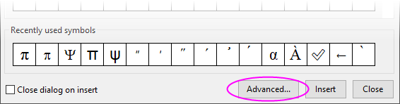
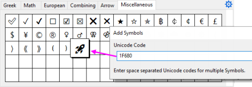
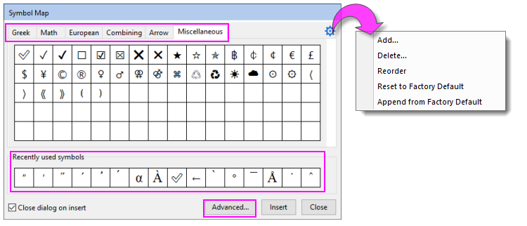
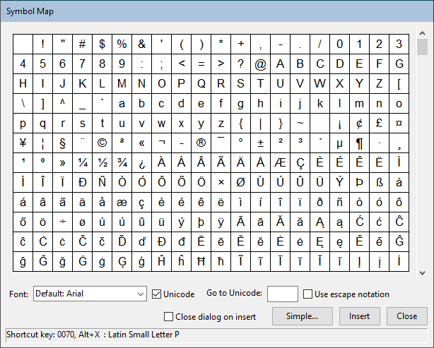

Abbildung Symbole und Abbildung Zeichen
Symbol-Character-Map
Die Abbildung Symbole wird in der gesamten Bedienoberfläche verwendet, um Sonderzeichen zu Textobjekten oder Arbeitsblattzellen hinzuzufügen. Dadurch können diese Sonderzeichen in Diagramme, Arbeitsblätter, Layoutseiten und Notizfenster eingefügt werden.
Seit Origin 2021b gibt es einen neuen einfachen Dialog zum Einfügen von Zeichen -- mit einer Schaltfläche, die den altbekannten erweiterten Dialog bei Bedarf öffnet.
- 
Verwandte Themen:
Einfache Abbildung Symbole
Seit Origin 2022b ruft das Auswählen der Abbildung Symbole -- beim Bearbeiten einer durch Rich Text aktivierten Arbeitsblattzelle, einer Zellnotiz oder eines Notizfensters bzw. einer Textbeschriftung auf einer Diagramm- oder Layoutseite -- einen vereinfachten Dialog der Abbildung der Symbole auf (alias einfache Abbildung Symbole). Diese Änderung wurde gemacht, um Anwendern einen schnellen Point-and-Click-Zugriff auf die am meisten verwendeten Symbole zu geben.
Außerdem können Anwender schnell Symbole hinzufügen (seit Origin 2023 schließt dies UTF-32-Symbole ein, die vom Dialog Erweitert nicht unterstützt werden). Alle, was Sie brauchen, sind die entsprechenden Codepunkte, um ein oder mehrere Symbole zur Abbildung hinzuzufügen (aber beachten Sie bitte Schriftarten ändern weiter unten).
-
- 
- Fügen Sie Symbolen aus den Registerkarten Griechisch, Mathematik, Europäisch, Kombinieren, Pfeil und Sonstiges ein.
- Die Registerkarte Kombinieren wird verwendet, um Elemente, die oft mit Buchstaben in wissenschaftlichen Ausdrücken kombiniert werden (z. B. Überstrich (� � �) zu "x" hinzufügen), einzufügen.
- Symbole, die über eine Registerkarte dieses Dialogs eingegeben wurden -- oder über den Dialog Erweitert -- werden zur Liste Zuletzt verwendete Symbole hinzugefügt.
- Wenn Anwender von diesem Dialog aus nicht auf das gewünschte Symbol zugreifen können, können sie (a) die Schaltfläche Hinzufügen des Dialogs verwenden, um das Symbol hinzuzufügen (nächster Stichpunkt), (b) auf die Schaltfläche Erweitert klicken und zur erweiterten Abbildung Symbole gehen oder (c) die Tastenkombination ALT+X verwenden, um das Symbol direkt in ihre Arbeitsblattzelle, Textbeschriftung etc. einzufügen.
- Klicken Sie auf das Symbol des "Zahnrads", um die Symbole zur oder von der aktiven Registerkarte hinzuzufügen oder zu löschen. Sie können die Symbole auf der aktiven Registerkarte durch Ziehen neu ordnen oder mit Wiederherstellen den Zustand wie bei der Installation herstellen oder mit Anhängen die zuvor gelöschten Symbol an die aktuelle Registerkarte anhängen, ohne andere Symbole auf der Registerkarte zu beeinträchtigen.
- 
Schriftarten ändern:
- Anwender können Schriften in diesem Dialog nicht ändern. Schriften werden innerhalb der Registerkarten vorausgewählt.
- Um Schriftarten zu ändern, die von jeder Registerkarte verwendet werden, öffnen Sie den Dialog Spezielle Standardschriften (Hilfsmittel: Spezielle Standardschriften). Beim Bearbeiten einer Arbeitsblattzelle wird die aktive Schriftart der Zelle verwendet. Einige Dialogsymbole werden eventuell in der aktiven Schrift nicht richtig angezeigt. (Das heißt, Sie sehen leere Rechtecke, in denen sich das Symbol befinden sollte.)
 |
Die Anwenderliste der Symbole der einfachen Abbildung wird in der Textdatei \User Files\SymbolMap.ini festgehalten. Die 4-stelligen Hex-Codes werden nach Abschnitt (z. B. [Math]) aufgeteilt. Die Abbildung "wie bei Installation" wird in einer Datei des gleichen Namens im EXE-Ordner aufbewahrt. Wenn Sie Auf Werkseinstellung zurücksetzen, wird die EXE-Version für die aktive Registerkarte in die Anwenderliste gelesen.
|
Erweiterte Abbildung Symbole
Vor Origin 2022b war dies einfach die "Abbildung Symbole", jetzt handelt es sich um die "Erweiterte Abbildung Symbole."
- 
Wenn die Einfache Abbildung Symbole nicht das Zeichen enthält, das Sie benötigen, und Sie nicht den Codepunkt des Symbols kennen, besteht eine Option darin, auf die Schaltfläche Erweitert unten im Dialog zu klicken und die erweiterte Abbildung Symbole zu öffnen. Beachten Sie jedoch, dass der Dialog Erweitert nicht UTF-32 unterstützt.
- Schriftart: Jede Schriftart besitzt bis zu einem gewissen Grad ihren eigenen Zeichensatz. Ändern Sie die Schriftart nach Bedarf.
- Unicode: Die meisten bevorzugen das Einfügen von Unicode-Zeichen. In dem Fasll sollten Sie das Kontrollkästchen Unicode aktiviert lassen.
- Zu Unicode gehen: Wenn Sie den 4-stelligen Hex-Code für Ihr Zeichen kennen, können Sie ihn in das Feld eingeben, um das Zeichen auszuwählen.
- Escape-Notation verwenden: Aktivieren Sie dieses Kontrollkästchen, um das Zeichen, geschützt von einer Escape-Sequenz, einzufügen. Wird nur gebraucht, wenn Sie Ihr Projekt mit Anwendern von Origin 2017 und früher (vor Unicode) teilen.
- Dialog beim Einfügen schließen: Um mehrere Zeichen ohne Schließen dieses Dialogs einzufügen, deaktivieren Sie dieses Kontrollkästchen.
- Klicken Sie auf die Schaltfläche Einfach, um zur einfachen Abbildung Symbole zu gelangen.
Abbildung Zeichen
Die Abbildung Zeichen wird beim Bearbeiten einer Arbeitsblattzelle angezeigt, in der Rich Text nicht aktiviert ist (standardmäßig wird Rich Text nur für die Zeilen Einheiten und Anwenderparameter im Bereich der Spaltenbeschriftungszeilen aktiviert). Die Abbildung Zeichen -- sowohl Einfach als auch Erweitert -- gleichen der Abbildungen Symbole mit einigen Unterschieden:
- Einige Bedienelemente fehlen im Dialog Erweiterte Abbildung Zeichen -- das Kontrollkästchen Unicode und Escape-Sequenzen verwenden.
- Sie können die Schriftart in der erweiterten Abbildung Zeichen nicht ändern. Die Auswahlliste ist abgeblendet. Wenn Sie Zeichen aus einer speziellen Schriftart einfügen müssen, sind Ihre Optionen, (a) Rich Text in der Zelle zu aktivieren (z. B. Rechtsklick auf die Zelle und Datenstil festlegen: Rich Text) oder (b) die Zelle auszuwählen, die Schriftart in der Auswahlliste Schriftart auf der Symbolleiste Format zu wählen, und dann die Abbildung Symbole zu öffnen und auf Erweitert zu klicken.
|
Beachten Sie, dass Sie seit Origin 2018 Rich Text nicht aktivieren müssen, um Sonderzeichen in Arbeitsblattzellen einzugeben. Weitere Informationen finden Sie unter FAQ-149.
|